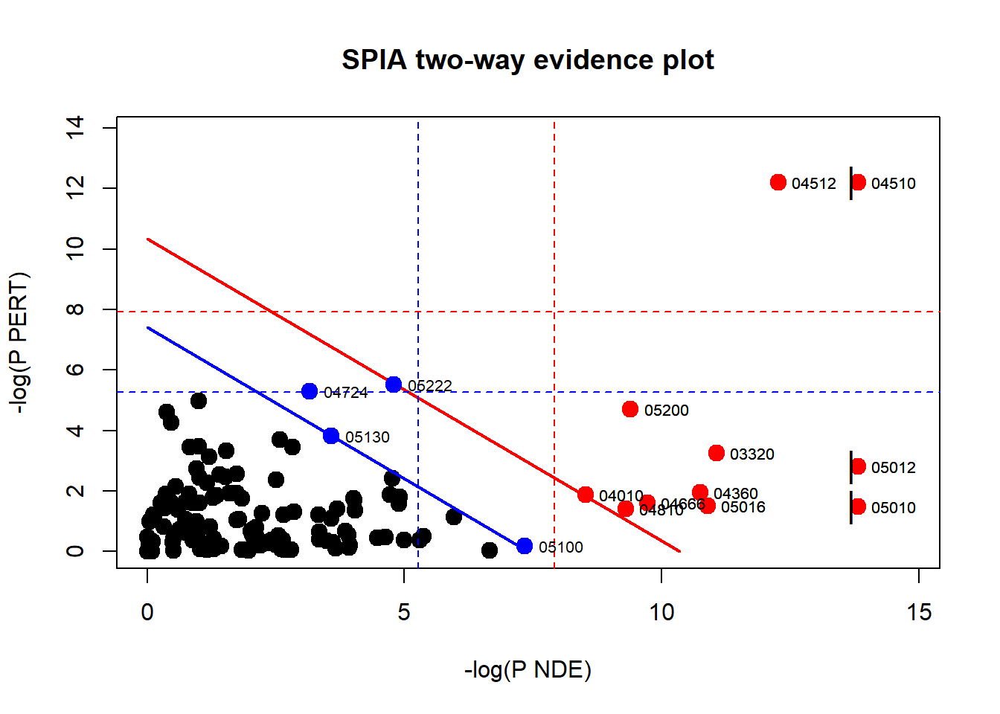

# if (!require("BiocManager", quietly = TRUE))
# install.packages("BiocManager")
# BiocManager::install("SPIA")
# BiocManager::install("hgu133plus2.db")
# install.packages(tidyverse)
library(tidyverse)
library(SPIA)
library(hgu133plus2.db)
select <- dplyr::selectPathway Enrichment Analysis
(Análisis de enriquecimiento de vías)
Las tecnologías de genómica, transcriptómica y proteómica generan grandes cantidades de datos que luego deben ser analizados de la manera más eficaz posible. Una tendencia cada vez más marcada es la de analizar los genes obtenidos en grupos funcionalmente relacionados. Esto se logra mediante el Pathway enrichment analysis. El objetivo de este método es identificar grupos de genes con cambios de expresión posiblemente moderados pero coordinados en diferentes condiciones biológicas. Hay distintos tipos de análisis que se pueden realizar y se clasifican en:
- Competitivo vs. Autónomo (Competitive vs. Self-contained).
- Topológico vs. no topológico (Topological vs Non-Tophological).
Aquí vamos a utilizar SPIA que es un análisis mixto y topológica. Este método calcula un valor teniendo en cuenta el fold change de los genes, el score para el pathway enrichment y la topología de las vías de señalización. Para trabajar con SPIA es necesario contar con la lista de genes diferencialmente expresados con sus log fold changes y la lista completa de genes en la plataforma.
Para este ejemplo vamos a utilizar la base de datos colorectal cancer [Affymetrix geneChip technology (GEE GSE4107)] y los paquetes SPIA y tidyverse:
Instalar y cargar los paquetes SPIA, tidyverse y hgu133plus2.db.
Análisis topológico de enriquecimiento de vías con SPIA.
Vamos a cargar el set de datos colorectalcancer, el cual incluye un dataset llamado “top”. Con la función head() podemos ver las primeras 6 observaciones o filas.
data(colorectalcancer)
head(top) ID logFC AveExpr t P.Value adj.P.Val B
10738 201289_at 5.960206 6.226928 23.94388 1.789221e-17 9.782565e-13 25.40124
18604 209189_at 5.143502 7.487305 17.42995 1.560212e-14 2.843486e-10 21.02120
11143 201694_s_at 4.148081 7.038281 16.46040 5.153117e-14 7.043667e-10 20.14963
10490 201041_s_at 2.429889 9.594413 14.06891 1.293706e-12 1.414667e-08 17.66883
10913 201464_x_at 1.531126 8.221044 10.98634 1.685519e-10 1.151947e-06 13.61189
11463 202014_at 1.429269 5.327647 10.45906 4.274251e-10 2.418771e-06 12.80131
ENTREZ
10738 3491
18604 2353
11143 1958
10490 1843
10913 3725
11463 23645Usamos el paquete hgu133plus2.db que contiene Affymetrix Human Genome U133 Plus 2.0 Array annotation data para asignarle a cada ID de la base top un ENTREZ ID.
x <- hgu133plus2ENTREZID
top$ENTREZ <- unlist(as.list(x[top$ID]))Vamos a seleccionar las observaciones que no tengan datos faltantes y eliminar los datos duplicados en ENTREZ. Como las observaciones están ordenadas según el log2FoldChange (logFC en la base), al quedarnos con la primera aparición de cada ENTREZ, retenemos la más significativa de cada probset.
top <- top %>%
filter(!is.na(ENTREZ),
!duplicated(ENTREZ))Además, vamos a seleccionar las observaciones que tienen un p-valor ajustado menor a 0.1.
tg1 <- filter(top, adj.P.Val < 0.1)Luego, creamos un vector con los valores de logFC de la nueva base y utilizamos la variable ENTREZ para nombrar los valores del vector.
DE_Colorectal <- tg1$logFC
names(DE_Colorectal) <- tg1$ENTREZCreamos un segundo vector con los ENTREZ de la base TOP. Esta es la base original pero sin los valores faltantes o repetidos.
ALL_Colorectal <- top$ENTREZCorremos el análisis utilizando la función SPIA(). Utilizamos el método de “fisher” para estudiar la significancia de la representación de nuestros genes en la vía de señalización.
resultados <- spia(de = DE_Colorectal, all = ALL_Colorectal, organism = "hsa", nB = 2000, plots = TRUE, verbose = TRUE, combine = "fisher")Eliminemos la columna “KEGGLINK” y veamos las primeras líneas de nuestros resultados:
resultados %>%
select(-KEGGLINK) %>%
head() Name ID pSize NDE pNDE tA pPERT
1 Focal adhesion 04510 177 88 1.984232e-07 100.644774 0.000005
2 Alzheimer's disease 05010 148 84 1.024602e-10 -5.654716 0.228000
3 ECM-receptor interaction 04512 74 42 4.684224e-06 26.061813 0.000005
4 Parkinson's disease 05012 109 64 2.616512e-09 -11.129862 0.060000
5 PPAR signaling pathway 03320 65 37 1.556513e-05 -3.051555 0.039000
6 Pathways in cancer 05200 295 123 8.310528e-05 68.667286 0.009000
pG pGFdr pGFWER Status
1 2.841315e-11 3.892601e-09 3.892601e-09 Activated
2 5.952356e-10 2.724970e-08 8.154727e-08 Inhibited
3 5.967088e-10 2.724970e-08 8.174911e-08 Activated
4 3.701030e-09 1.267603e-07 5.070412e-07 Inhibited
5 9.296617e-06 2.547273e-04 1.273637e-03 Inhibited
6 1.129844e-05 2.579812e-04 1.547887e-03 ActivatedEl output obtenido es el siguiente:
Columnas
- pSize: el número de genes en la vía de señalización.
- NDE: el número de genes diferencialmente expresados en esta vía.
- tA: la acumulación total de perturbaciones observadas en la vía.
- pNDE: la probabilidad (p-valor) de observar al menos genes NDE en la vía utilizando un modelo hipergeométrico (similar a ORA)
- pPERT: la probabilidad (p-valor) de observar una acumulación total más extrema que tA solo por casualidad
- pG: el p-valor obtenido al combinar pNDE y pPERT
- pGFdr y pGFWER: los valores pG ajustados por la tasa de descubrimiento falso (FDR) y el método de Bonferroni, respectivamente.
- State: indica si la vía está inhibida o activada.
- KEGGLINK: proporciona un enlace web al sitio web de KEGG que muestra la imagen de la ruta con los genes expresados diferencialmente resaltados en rojo.
Gráficos
Como indicamos a la función SPIA que genere los gráficos asociados a estos resultados (plots = TRUE), estos se guardan como un archivo pdf en el directorio en el que estamos trabajando.
Podemos ver las vías significativamente desreguladas al ver la sobrerrepresentación y las perturbaciones de cada vía.
plotP(resultados, threshold = 0.05)
En este gráfico, cada vía es un punto y las coordenadas son el logaritmo de pNDE (usando un modelo hipergeométrico) y el p-valor de las perturbaciones (pPERT). Las líneas oblicuas muestran las regiones de importancia según la evidencia combinada.
Referencias
- Tarca AL, Kathri P, Draghici S (2024). SPIA: Signaling Pathway Impact Analysis (SPIA) using combined evidence of pathway over-representation and unusual signaling perturbations. R package version 2.56.0, http://bioinformatics.oxfordjournals.org/cgi/reprint/btn577v1.
- Wickham H, Averick M, Bryan J, Chang W, McGowan LD, François R, Grolemund G, Hayes A, Henry L, Hester J, Kuhn M, Pedersen TL, Miller E, Bache SM, Müller K, Ooms J, Robinson D, Seidel DP, Spinu V, Takahashi K, Vaughan D, Wilke C, Woo K, Yutani H (2019). “Welcome to the tidyverse.” Journal of Open Source Software, 4(43), 1686. doi:10.21105/joss.01686.
- Carlson M (2016). hgu133plus2.db: Affymetrix Human Genome U133 Plus 2.0 Array annotation data (chip hgu133plus2). R package version 3.2.3.